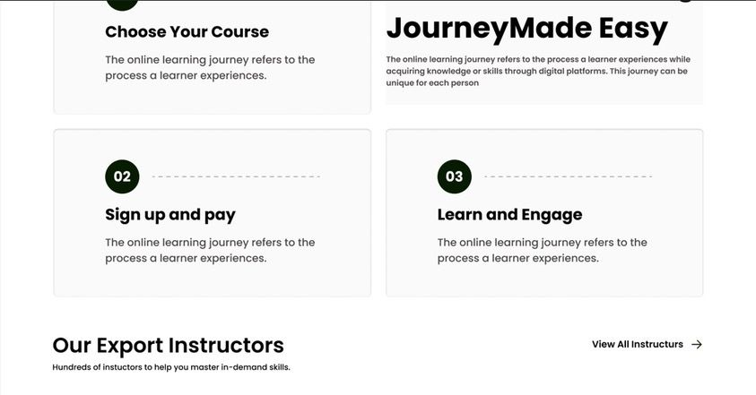
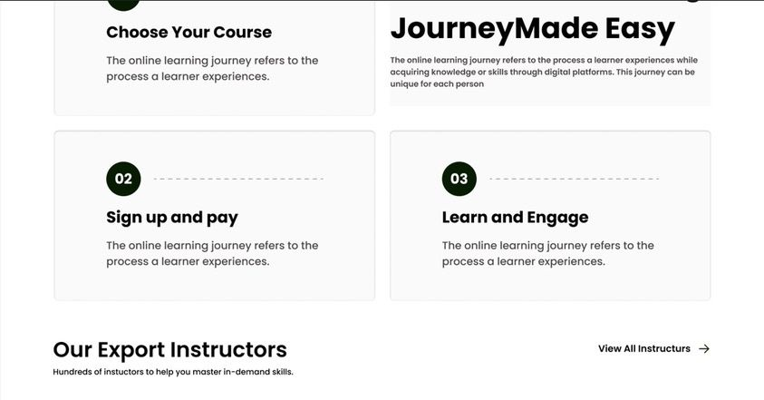

LearnAxis


 


Project Overview
LearnAxis is a modern, educational landing page designed to promote online learning platforms. The layout follows a clean, professional, and engaging style that builds trust and makes course discovery simple. The goal of this project is to provide learners with easy access to courses, expert instructors, and blogs while highlighting the credibility of the platform through testimonials and partnerships.
Key Features
- Hero Section with a bold headline, CTA button, and student imagery to build trust and encourage sign-ups.
- Trusted by Brands logos (Google, Slack, Notion, Monday.com) for credibility
- Popular Courses Section using card-based layouts with pricing, ratings, and categories for easy browsing.
- Step-by-Step Journey section showing a learner’s process: choose, sign up, and engage.
- Instructor Profiles to highlight expert credibility.
- Student Testimonials with image, rating, and carousel for social proof.
- Blog Section showcasing trending topics in business, technology, and learning.
- Contact Section with a clean form and supportive imagery to encourage inquiries.
- Footer Section for navigation, social links, and company info.
Key Features - Dashboard
- Platform analytics and reporting.
- User management (students/instructors).
- Content moderation and support tools.
- Admin Dashboard
Technologies Used
- Figma: Wireframing, UI design, prototyping, and design system creation.
- Design Systems & Grids: Ensuring alignment, balance, and responsive structure.
- Typography & Color Styles: Clean, professional palette (green + yellow) for education.
- Interactive Prototypes: Demonstrating user flow from landing to dashboard.
My Role & Learnings
- Designed both marketing (landing page) and functional (dashboard) sides of the platform.
- Built a scalable design system that maintains consistency across marketing and product.
- Learned to balance conversion-focused UI (landing page) with usability-focused UI (dashboard).
- Enhanced my skills in creating user journeys that move from attraction → conversion → engagement.